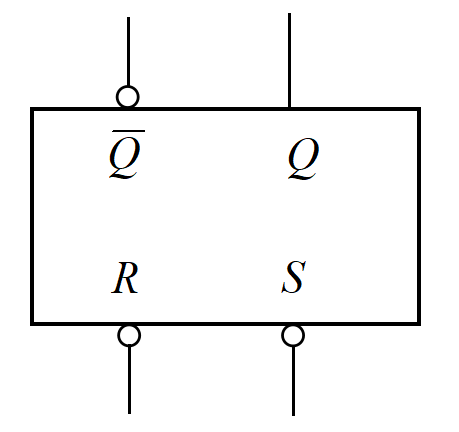
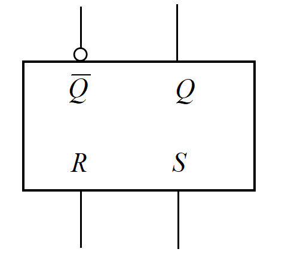
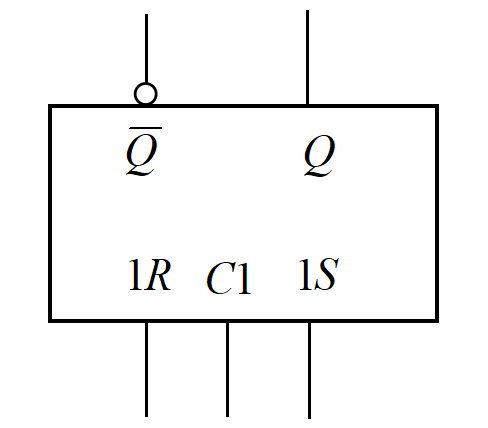
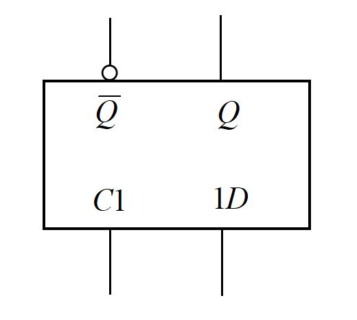
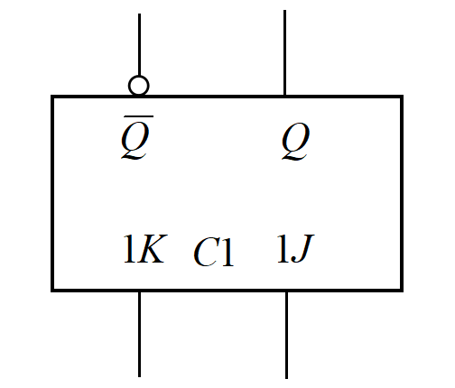
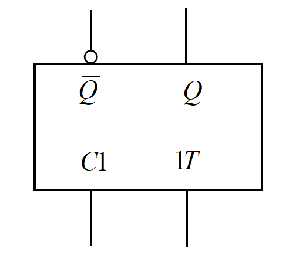
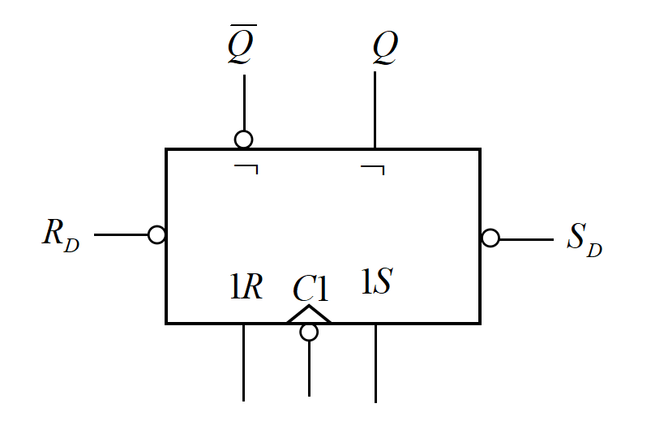
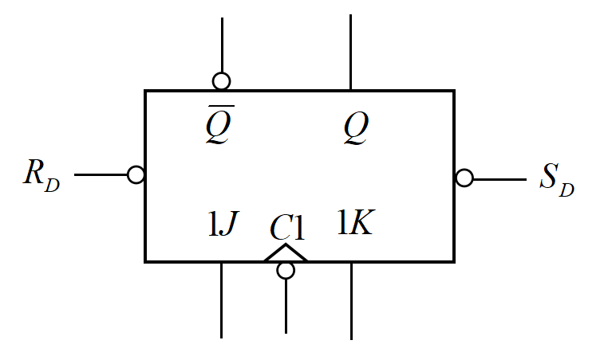

5 触发器
毫无疑问的一点是，这一章是时序逻辑电路的重要基础。本章描述了很多类型的触发器，不过正如目录中所陈列的那样，它们可以分为四类。
基本 RS 触发器¶
基本 RS 触发器逻辑符号图


又分为两种，由与非门构成的，以及由或非门构成的。其中，$R$ 代表 RESET（重设），有效时会将输出 $Q$ 置为 $0$；$S$ 代表 SET（设置），有效时会将输出 $Q$ 置为 $ 1$。
这样就可以理解基本 RS 触发器的 $4$ 种情况。对于由与非门构成的 RS 触发器，由于其低电平有效：
RS = 00 $ \rightarrow $ RESET 且 SET，显然这是不被允许的。
RS = 01 $ \rightarrow $ 仅 RESET $ \rightarrow $ Q 置 0。
RS = 10 $ \rightarrow $ 仅 SET $ \rightarrow $ Q 置 1。
RS = 11 $ \rightarrow $ No operation $ \rightarrow $ Q 不变。
同样可以理解另一种 RS 触发器的工作方式。
同步触发器¶
时钟 CP 从这里开始引入。从此以后的触发器，全都带有这个时钟控制变量 CP，这是让人很头疼的事情。我们需要知道
下面的 $4$ 种触发器的“同步”功能均是通过时钟信号控制的，因此又叫钟控触发器，并且这些触发器的工作窗口都是
钟控 RS 触发器逻辑符号图

钟控 RS 触发器¶
这是它的逻辑符号图。构造上，可以有这个：
当 CP = 0，触发器被锁死了，状态不变。当 CP = 1，触发器被打开，这时它的工作结果和或非门构成的基本RS触发器是一样的。这个时钟信号CP和组合逻辑电路器件中的“使能端”有些类似。
有时候在触发器两端加上 $ R_D $ 和 $ S_D $ ，可以强制改变触发器的状态。
钟控 D 触发器逻辑符号图

钟控 D 触发器¶
这是它的逻辑符号图。
在钟控 RS 触发器的基础上，令 $ S=D,R=\overline{D} $ 即可得到钟控D触发器。同样当 CP = 0 时触发器锁死，CP = 1 时，输出 Q 就是 D（所以可以把 D 解释为 Data）。
这个触发器没有非法输入。
钟控 JK 触发器¶
钟控 JK 触发器逻辑符号图

这是它的逻辑符号图。
相比于前面的 $2$ 个同步触发器，钟控JK触发器有一点很特别。
当 CP = 0 时，触发器锁死；CP = 1 时，钟控 JK 触发器的功能可以用口诀概述为“00 不变 11 改，JK 不同随 J 摆”。
再来谈谈这个“改变”，它比较玄乎——因为这个时候不看触发器的现态，还真不知道次态是什么；但是置 0、置 1 就不同，不需要关心你的现态。所以钟控JK触发器存在
其实对于“不变”功能而言，要想知道次态，我们也必须知道现态是什么。我们也可以这样理解：在“不变”功能持续阶段，输出Q一直在进行“不变”操作，只是电平不发生变化，所以没有观察到第二类翻转。
钟控 T 触发器¶
钟控 T 触发器逻辑符号图

这是它的逻辑符号图。
在钟控 JK 触发器的基础上，令 $ J=K=T $ 即可得到钟控T触发器。它相当于只有“00不变”和“11改”的低配钟控JK触发器，显然它也存在
然后，这些同步触发器其实还存在
主从触发器¶
主从触发器主要解决了一些同步触发器空翻的问题，此类触发器的输出不再和某一段时间相关，而是仅与某些时刻相关。但是主从触发器其实都
主从 RS 触发器¶
主从 RS 触发器逻辑符号图

这是它的逻辑符号图。
它是由两个钟控 RS 触发器构成的，一个作主触发器，一个作从触发器。在 CP = 1 时，主触发器的输出其实仍然会存在
对于主从 RS 触发器，主触发器的工作窗口是
主从JK触发器¶
主从 JK 触发器逻辑符号图

这是它的逻辑符号图。
主从JK触发器，也是存在这样的特别结构：
关于“一次翻转”现象
对于“一次翻转”的现象，这里简单阐述一下我的解释。我们从 $ CP=1 $ 时（主触发器打开，从触发器封锁）开始看起，并假设触发器现在的状态是 $ Q=0,\overline{Q}=1 $ .
此时我们会发现，主触发器中和 $ K $ 相连的与非门被封锁， $ K $ 的输入将无法改变主触发器的状态。然而即便如此，当已知 $ Q=0 $ 时，通过穷举输入 $ JK $ 的4种情况，我们会发现“00不变11改，JK不同随J摆”这一规律仍然成立——这样就解释了“一次翻转”中的“能够翻转”。
而当“翻转”已经发生（这当且仅当 $ J=1 $ ）时，主触发器的状态改变（ $ Q_主：0\rightarrow 1 $ ），与 $ J $ 间接相连的与非门（也就是输出 $ Q_主 $ 的与非门）将被 $ \overline{Q}_主=0 $ 锁定。此后 $ J $ 也被锁定，其输出将无法改变主触发器的状态，因此最多翻转一次。
对于 $ Q=1,\overline{Q}=0 $ 的情况，也可以类似地进行说明。
对于主从 JK 触发器，主触发器的工作窗口是
边沿触发器¶
很可惜，JK 触发器的“一次翻转”现象并不讨喜，因为它并不是在时钟边缘采样。主从触发器依赖主触发器的中介作用，实现了从触发器“接收时钟边沿输入”的功能；而边沿触发器则是直接接收时钟边沿输入。
维持-阻塞 D 触发器¶
维持-阻塞 D 触发器逻辑符号图

这是它的逻辑符号图。当 CP = 0 时，触发器（控制门）被锁住；当 CP = 1 时，触发器打开，可以接收外接信号，同时在接收到信号时锁住与D相连的与非门或者触发器的控制门（当输入 D = 0 时锁与 D 相连的与非门，当输入 D = 1 时锁住控制门），不再受输入 D 的影响。
这个触发器的工作窗口是
边沿 JK 触发器¶
边沿 JK 触发器逻辑符号图

这是它的逻辑符号图。这个触发器比较独特，它是这一章介绍的唯一一个利用门电路传输延迟时间实现的触发器。这个触发器的工作窗口是